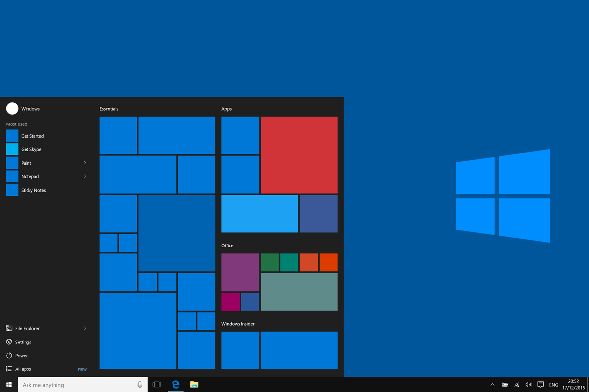

Alan Abramowski
Klasa 1 TIF
Microsoft Windows jest to rodzina systemów operacyjnych stworzonych przez firmę Microsoft. Systemy rodziny Windows działają na serwerach, systemach wbudowanych oraz na komputerach osobistych, z którymi są najczęściej kojarzone.
Microsoft podążył w rozwoju swoich systemów operacyjnych dwiema równoległymi ścieżkami. Jedna z nich koncentrowała się na dostarczaniu systemów operacyjnych dla użytkowników domowych, druga zaś oferowała rozwiązania dla profesjonalistów w dziedzinie informatyki. Ten swoisty dualizm skutkował pojawianiem się na rynku systemów domowych o znacznie bardziej chwytliwej dla oka stylistyce, lecz ograniczonymi w kwestiach pracy w sieci i bezpieczeństwa oraz wersji profesjonalnych – uboższych graficznie, lecz stabilniejszych podczas pracy w sieci i wyposażonych w lepsze zabezpieczenia. Pierwsze wersje tego systemu były 16 bitowe, najnowsze są 64 bitowe. Aktualnie jest to jeden z najpopularniejszych systemów
